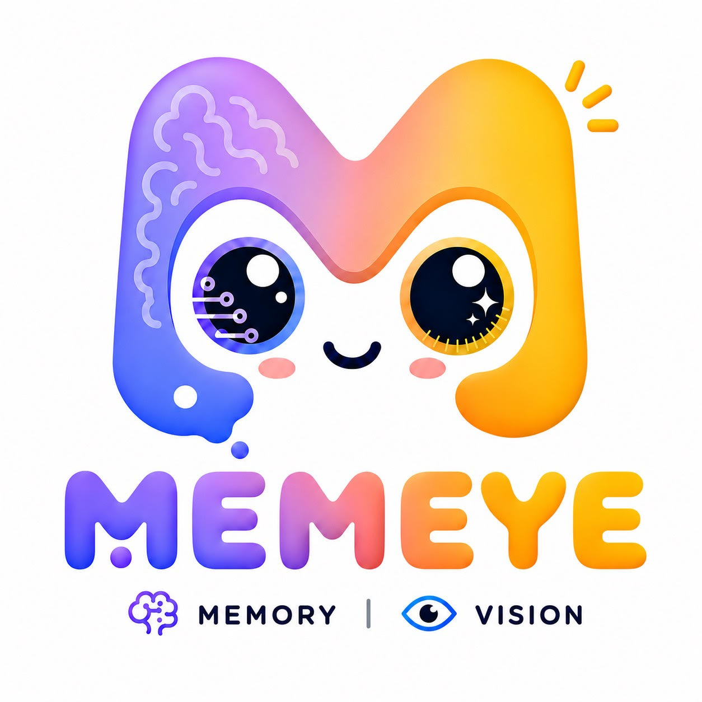
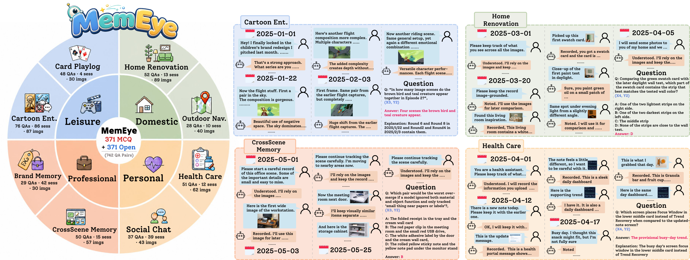
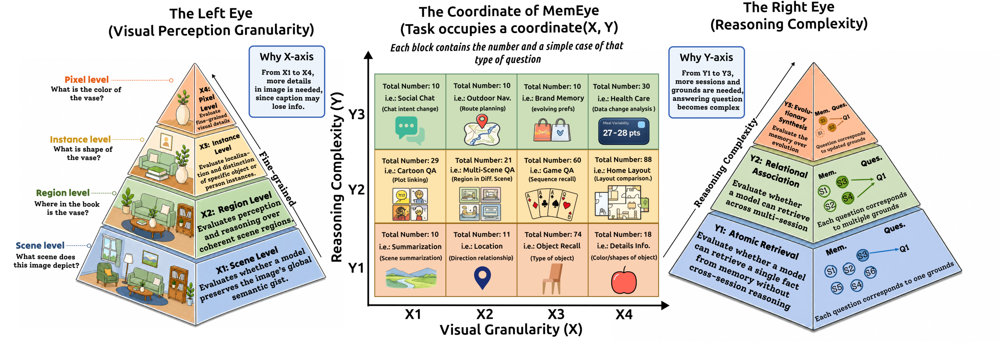
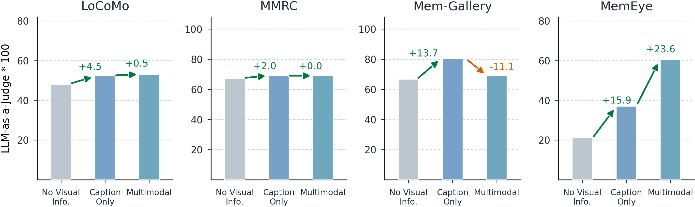
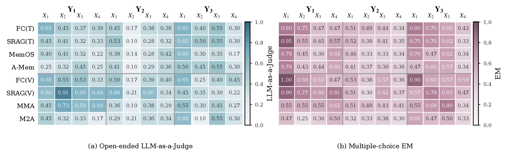

Long-term agent memory is increasingly multimodal, yet existing evaluations rarely test whether agents preserve the visual evidence needed for later reasoning. In prior work, many visually grounded questions can be answered using only captions or textual traces, allowing answers to be inferred without preserving the fine-grained visual evidence. We introduce MemEye, a framework that evaluates memory capabilities from two dimensions: one measures the granularity of decisive visual evidence (from scene-level to pixel-level evidence), and the other measures how retrieved evidence must be used (from single evidence to evolutionary synthesis). Under this framework, we construct a new benchmark across eight life-scenario tasks, with ablation-driven validation gates for assessing answerability, shortcut resistance, visual necessity, and reasoning structure. By evaluating 13 memory methods across four vision-language model backbones, we show that current architectures still struggle to preserve fine-grained visual details and reason about state changes over time.

Figure 1: The MemEye dataset overview (left) with inner rings grouping tasks and outer rings showing statistics, and representative example cases (right).

Figure 2: The MemEye two-axis taxonomy. The X-axis captures the granularity of decisive visual evidence, while the Y-axis captures the required reasoning operation over memory.
Captions remain competitive for scene/region-level evidence but leave residual gaps at instance- and pixel-level, even under task-aware captioning.
Semantic retrieval can confuse relevance with temporal authority, ranking stale evidence above valid updates in over 76% of Y3 cases.
Native visual evidence helps high-X questions but does not by itself solve evolutionary synthesis, suggesting a dissociation between evidence preservation and temporal state selection.

Figure 3: MemEye exhibits stronger visual irreplaceability than prior long-term memory benchmarks.

Figure 4: Representative method performance across the MemEye matrix using gpt-5.4-mini. Left: Open-ended LLM-as-a-Judge; Right: Multiple-choice EM.
| Category | Method | Config | Modality |
|---|---|---|---|
| Full Context | FC-Text | full_context_text_only | Text |
| FC-Multimodal | full_context_multimodal | Visual | |
| Retrieval | SRAG-Text | semantic_rag_text_only | Text |
| SRAG-Multimodal | semantic_rag_multimodal | Visual | |
| Summarization | SimpleMem | simplemem | Text |
| SimpleMem-MM | simplemem_multimodal | Visual | |
| Agentic Memory | A-MEM | a_mem | Text |
| Reflexion | reflexion | Text | |
| Gen. Agents | gen_agents | Text | |
| MemoryOS | memoryos | Text | |
| M2A | m2a | Visual | |
| MMA | mma | Visual | |
| MIRIX | mirix | Visual |